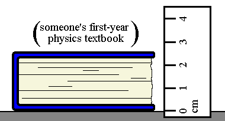

Again, we measure the thickness d of the textbook.
Assuming the thickness of the book is 2.6 cm and the absolute uncertainty Dd in the thickness is 2 mm, the relative uncertainty Dd / d is closest to...